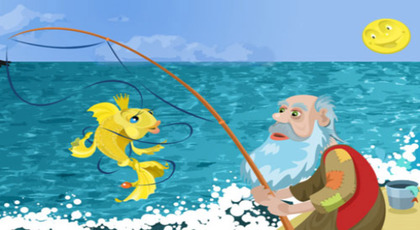

Balıkçı Dedenin Oğlu

Bir varanın, bir sürenin, zaman zamanda iken, kalbur samanda iken, sucu tellal keçi berber iken, tavşan bize çırak iken ben onbeş yaşımda çocuk iken, , samanlık tepesinde çelik çomak oynardım. Öteden doğru dedem geldi: oğlum müjde , baban dünyaya geldi dedi.. samanlık saçağından kendimi attım yere. Sonra eve gittim anam verdi babamı elime. Salla dedi beşiği salladım da salladım. Ben beşiği tıngır mıngır sallarken, elimden beşik kurtuldu. Babam vırak vırak başladı ağlamaya. Anam vurdu bana bir oklava…
Bir varmış, bir yokmuş, vaktin birinde bir balıkçı dede yaşarmış. Bu dedenin gözleri günün birinde kör olmuş. Bunun on iki yaşında bir çocuğu ile bir karısı varmış. Bu kadın, kocası balıkçı dedeye,”Adam “demiş “çocuk okula gitsin, ben de çamaşır yıkar, çalışır size bakarım.
Bununu üzerine çocuk okula gitmeye başlamış.Aradan geçen altı yıl boyunca hep kadın çalışmış, evi geçindirmiş.Çocuk 18 yaşına gelince annesine,”Ana” demiş. “Babamın zanaatı nedir? O da “ahh demiş, senin babanın yüzünden kırk yıldır yanıp kavruluyorum. Un buldumsa tuz bulamadım, tuz buldumsa, un bulamadım. Yazık ki 6 yıldır ellerin işini görüyorum.Yoksa sen de babanın zanaatına mı gireceksin?
Çocuk”Yok” demiş”ben sadece babamın ne iş yaptını öğrenmek için sordum” Kadın” tavan arasına çık da bak, demiş. Kapının arkasındaki şeyleri görünce babanın ne iş yaptığını anlarsın.
Çocuk tavan arasına çıkınca kapının arkasında bir serpme le zembil bulmuş. Bunları anası görmeden saçaktan aşağıya atmış. Kendiside tavan arasından inip, anasına” ben babamın zanaatını istemem” dedikten sonra evden çıkmış. Dışarıya attığı serpme ve zembili alarak Tuna kıyısında balık avlamaya gitmiş. O gün akşama kadar sekiz okka balık tutmuş, bunları satarak parasıyla un almış, mum almış, iki paralık da kıyma alıp annesine getirmiş.Kadın sevinmiş, çocuk beş altı ay balık tutup anasını güzelce beslemiş.
Günün birinde memleketin padişahı tellal bağırtıp, saray kadınlarının hamama gideceğini, kimsenin sokağa çıkmaması gerektiğini duyurmuş. O gün dükkanlar açılmamış, kimseler sokağa çıkmamış. Fakat bizim çocuk, tenha yollardan dolaşıp Tuna kıyılarına inmiş ve balık tutmuş yine. Eve dönerken, kadınlar yolda çocuğa rastgelmişler . Padişahın kızı” bu ne laf anlamaz adamdır! Kimse sokağa çıkmasın diyen babamı bile dinlemiyor” diye kızmış.
Çocuk kızın sözlerini duyunca, “Ey hanım sultan, sen seni bilirsin, ben beni. Her ateş düştüğü yeri yakar, benim doksan yaşında bir babam, 80 yaşında bir anam var. Bugün balığa gitmeseydim onlar aç kalırlar, susuz kalırlar, kahvesiz , tütünsüz kalırlardı.
Kız bunun işitince oğlana,” Sen bu balıkları satacak mısın , yoksa yiyecek misin? demiş. Oğlan “size söyledim ya demiş, bunları satıp anama, babama nafaka götüreceğim. Kız oğlanı saraya götürmüş, balıklarını elinden almış götürüp mutfağa bırakmış. Zembilin içine bir okka altın koyup çocuğa vermiş. “ Haydi git demiş, tuttuğun balıkları her gün buraya getir, sana bir okka altın veririm.
Uzatmayalım,çocuk her gün tuttuğu balıkları saraya götürmüş, bir süre sonra çuvallarla altını olmuş. “Artık kazanacağım kadar kazandım, niye balık tutayım diye düşünüp, balıkçılığı bırakmış.
Padişahın kızı , oğlanın artık saraya gelmediğini görünce,merak etmeye başlamış, günden güne sararmış, solmuş, yataklara düşmüş. Onun derdini hiç kimseler anlamamış. Kız artık büsbütün dermansız kalmış, Padişah kime sorduysa kızının derdini bilen olmamış.
En sonunda bir gün, cariyelerden biri kızın bir yandan ağlayıp, bir yandan konuştuğunu duyup, kulak vermiş ve duyduklarını padişaha anlatmış. Padişah kızının gizli derdini öğrendiği için çok memnunmuş.
Padişah, balıkçı dedeyi huzuruna çağırıp, olan biteni anlatmış. Oğlunu damat olarak almak istediklerini söylemiş. Balıkçı dede “Kız da senin, oğlan da senin demesi üzerine düğün hazırlıkları başlamış. Kırk gün kırk gece düğün yapmışlar.
Onlar ermiş muradına, biz de erelim.Gökten üç elma düşmüş, biri söyleyene, biri yazana, biri de dinleyenin başına.